Assistente de Suporte Técnico — Faculdade FAMETRO
Suporte a usuários, manutenção de computadores e apoio à infraestrutura de TI e redes.
SUPORTE TÉCNICO • INFRAESTRUTURA • REDES
Experiência prática em atendimento a usuários, manutenção de computadores e hardware, infraestrutura de redes, racks, Wi-Fi e switches gerenciáveis.
$ whoami
Caio Arcos Melo$ area
Suporte / Infra / Redes$ experience
4 anos • Suporte Técnico$ focus
Networking & Infrastructure01 • SOBRE MIM
Profissional de Suporte de TI com experiência em atendimento a usuários, manutenção de computadores e hardware, infraestrutura de redes, montagem e organização de racks, Wi-Fi e suporte a switches gerenciáveis.
Meu foco atual é consolidar conhecimentos de Redes de Computadores por meio de prática em laboratório, conectando teoria, configuração e validação. Trabalho conceitos de switching, VLANs, IPv4, subnetting, DHCP, roteamento, MikroTik e troubleshooting em Cisco Packet Tracer e EVE-NG.
Busco oportunidades em Suporte Técnico, Infraestrutura de TI e Redes, nas quais possa aplicar minha experiência prática e continuar evoluindo tecnicamente.
02 • COMPETÊNCIAS TÉCNICAS
IPv4 • Subnetting • VLAN • Trunk • 802.1Q • Switching • Inter-VLAN
DHCP • DNS • NAT • Gateway • DHCP Client • DHCP Server
Racks • Patch Panels • Cabeamento estruturado • Wi-Fi • Switches gerenciáveis
Cisco Packet Tracer • EVE-NG • MikroTik • Cisco IOS • Linux • Windows
Ping • ARP • Tabela MAC • Verificação de DHCP • Troubleshooting de conectividade
Firewall filter • Controle entre VLANs • Regras de input/forward • NAT masquerade
03 • EXPERIÊNCIA
Suporte a usuários, manutenção de computadores e apoio à infraestrutura de TI e redes.
04 • PROJETOS PRÁTICOS
Projetos e desafios realizados em ambientes de laboratório, principalmente Cisco Packet Tracer e EVE-NG. Cada case apresenta o objetivo, as tecnologias utilizadas, a implementação e as formas de validação praticadas.
IPv4, subnetting, VLANs, trunk, switching e roteamento entre VLANs.
DHCP, DNS, NAT e configuração de gateways em laboratórios práticos.
Firewall, controle entre VLANs, testes de conectividade e troubleshooting.
PC0 — Switch0 — PC1, usando 192.168.10.10/24 e 192.168.10.20/24, com teste de ping e consulta da tabela MAC.
LAN, Ethernet, MAC, ARP, endereçamento IPv4, conectividade e troubleshooting básico.
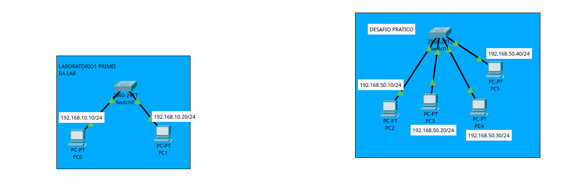
Aplicação prática de divisão de 192.168.50.0/24 em quatro segmentos /26: TI, Administração, Financeiro e Wi-Fi.
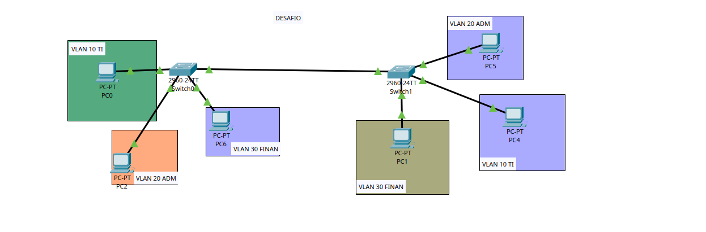
Laboratório com VLAN 10 (TI), VLAN 20 (Administração) e VLAN 30 (Financeiro), distribuídas entre switches e conectadas por trunk.
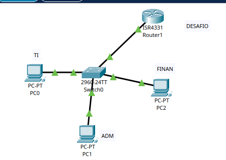
Prática de comunicação entre segmentos utilizando um roteador, switch e redes separadas para TI, Administração e Financeiro.
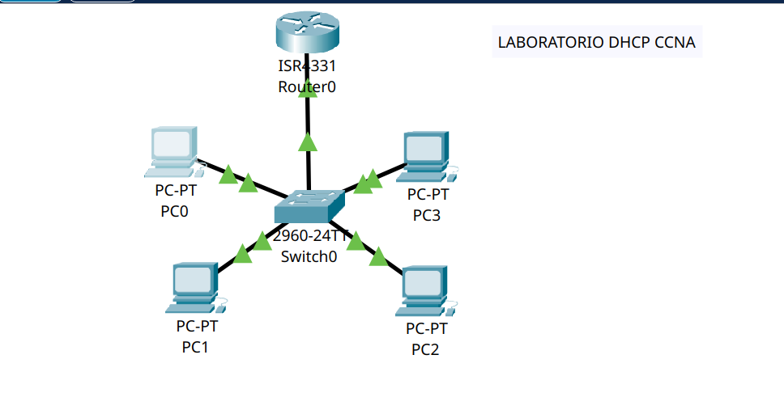
Laboratório de DHCP com roteador, switch e múltiplos hosts, praticando distribuição automática de endereços IP.
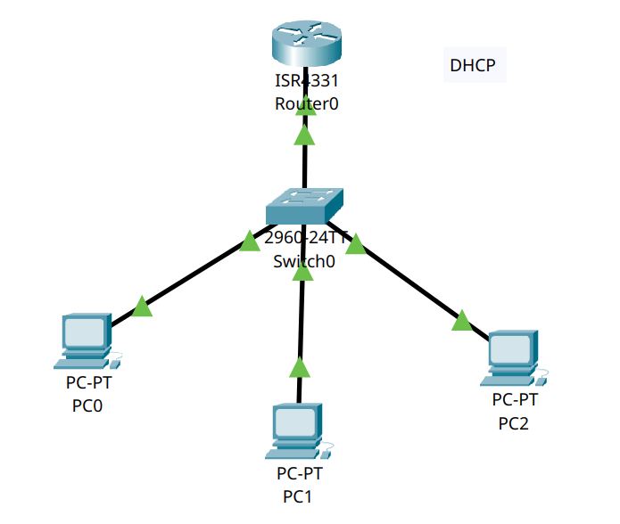
Praticar a entrega automática de IPv4, máscara, gateway padrão e DNS por meio de pools DHCP no roteador Cisco.
DORA, Discover, Offer, Request, ACK, pools, excluded-address, lease, DHCP Relay e comandos de verificação.
Rede 192.168.10.0/24, gateway 192.168.10.1, exclusão dos primeiros 10 endereços e pool LAN10.
ip dhcp excluded-address 192.168.10.1 192.168.10.10 ip dhcp pool LAN10 network 192.168.10.0 255.255.255.0 default-router 192.168.10.1 dns-server 8.8.8.8
Prática com as redes 192.168.10.0/24 e 192.168.20.0/24, gateways .1 e pools separados.
Nos PCs, configuração via DHCP; no roteador, verificação das concessões com show ip dhcp binding e do pool com show ip dhcp pool.
Topologia com múltiplos PCs utilizando a rede 192.168.50.0/24, aplicada para praticar endereçamento, conectividade e validação de comunicação.
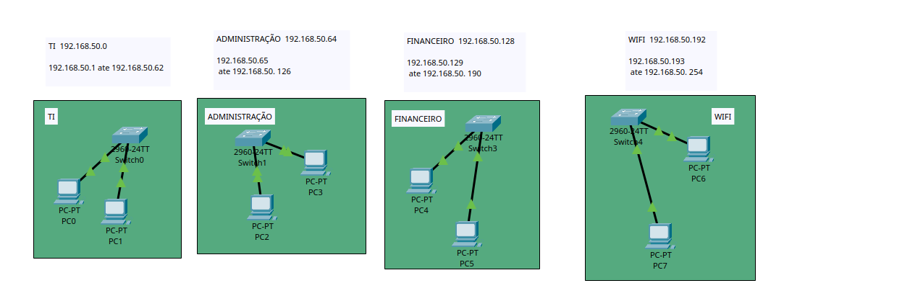
Implementação prática em EVE-NG com MikroTik conectado a switches, utilizando VLAN 10, VLAN 20 e VLAN 30, gateways por VLAN, pools DHCP, cliente DHCP na WAN, DNS, NAT e regras de firewall.
VLAN, trunk, gateways, DHCP Server, DHCP Client, DNS, NAT masquerade, firewall filter, controle de comunicação entre VLANs e troubleshooting.
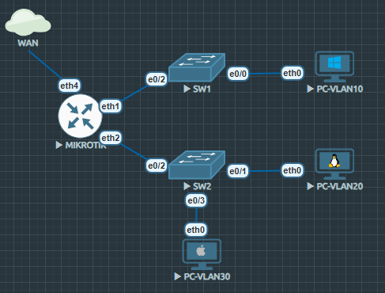
VLAN 10: 192.168.10.1/24 • VLAN 20: 192.168.20.1/24 • VLAN 30: 192.168.30.1/24 • WAN: 192.168.136.129/24.
Pools para VLAN 10, VLAN 20 e VLAN 30, com faixas .10–.254 e lease time de 30 minutos.
/interface bridge add name=BR-TRUNK /interface bridge port add bridge=BR-TRUNK interface=ether1 /interface vlan add interface=BR-TRUNK name=VLAN10 vlan-id=10 /interface vlan add interface=BR-TRUNK name=VLAN20 vlan-id=20 /ip address add address=192.168.10.1/24 interface=VLAN10 /ip address add address=192.168.20.1/24 interface=VLAN20 /ip pool add name=POOL-VLAN10 ranges=192.168.10.10-192.168.10.254 /ip pool add name=POOL-VLAN20 ranges=192.168.20.10-192.168.20.254 /ip dhcp-server add name=DHCP-VLAN10 interface=VLAN10 address-pool=POOL-VLAN10 disabled=no /ip dhcp-server network add address=192.168.10.0/24 gateway=192.168.10.1 dns-server=8.8.8.8 /ip dhcp-server add name=DHCP-VLAN20 interface=VLAN20 address-pool=POOL-VLAN20 disabled=no /ip dhcp-server network add address=192.168.20.0/24 gateway=192.168.20.1 dns-server=8.8.8.8 /ip dhcp-client add interface=ether1 disabled=no /ip dns set servers=8.8.8.8,1.1.1.1 allow-remote-requests=yes /ip dhcp-client set [find interface=ether4] use-peer-dns=no /ip firewall nat add chain=srcnat out-interface=ether4 action=masquerade comment="NAT INTERNET" /ip firewall filter add chain=forward connection-state=established,related action=accept comment="ACEITAR ESTABELECIDAS" /ip firewall filter add chain=forward src-address=192.168.10.0/24 dst-address=192.168.20.0/24 action=accept comment="VLAN10 -> VLAN20 PERMITIR" /ip firewall filter add chain=forward src-address=192.168.20.0/24 dst-address=192.168.10.0/24 action=drop comment="BLOQUEAR VLAN20 -> VLAN10" /ip firewall filter add chain=input protocol=icmp action=accept comment="INPUT - ICMP" /ip firewall filter add chain=input src-address=192.168.10.0/24 action=accept comment="INPUT - VLAN10" /ip firewall filter add chain=input action=drop comment="INPUT - BLOQUEAR RESTANTE"
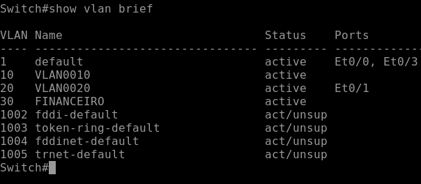
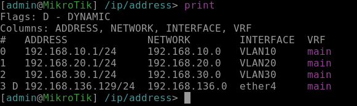
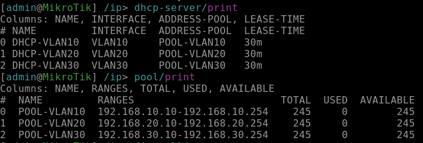
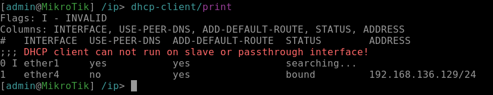
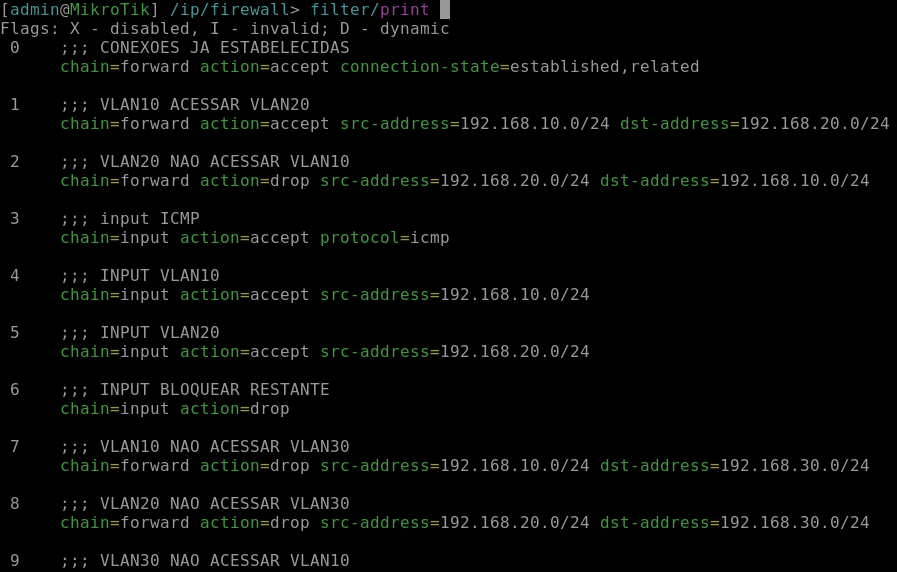
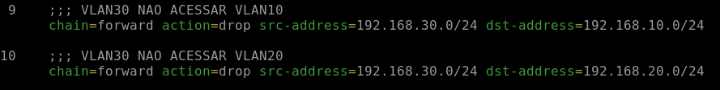
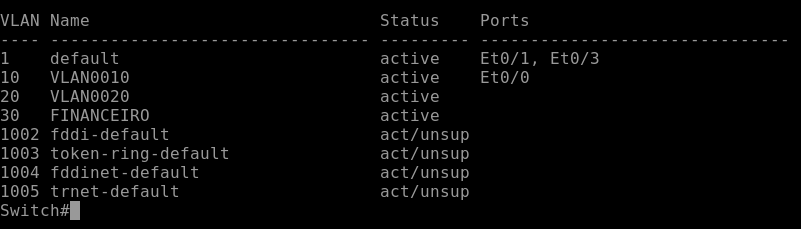
05 • EXPERIÊNCIA PRÁTICA
Experiência prática na montagem e organização de infraestrutura física de redes, incluindo instalação de rack, patch panels, organização de cabeamento estruturado, identificação de pontos, passagem de cabos e preparação para conexão dos equipamentos de rede.
Infraestrutura física de redes, cabeamento estruturado, organização de rack, patch panel, gestão de cabos, identificação de pontos e boas práticas de instalação.
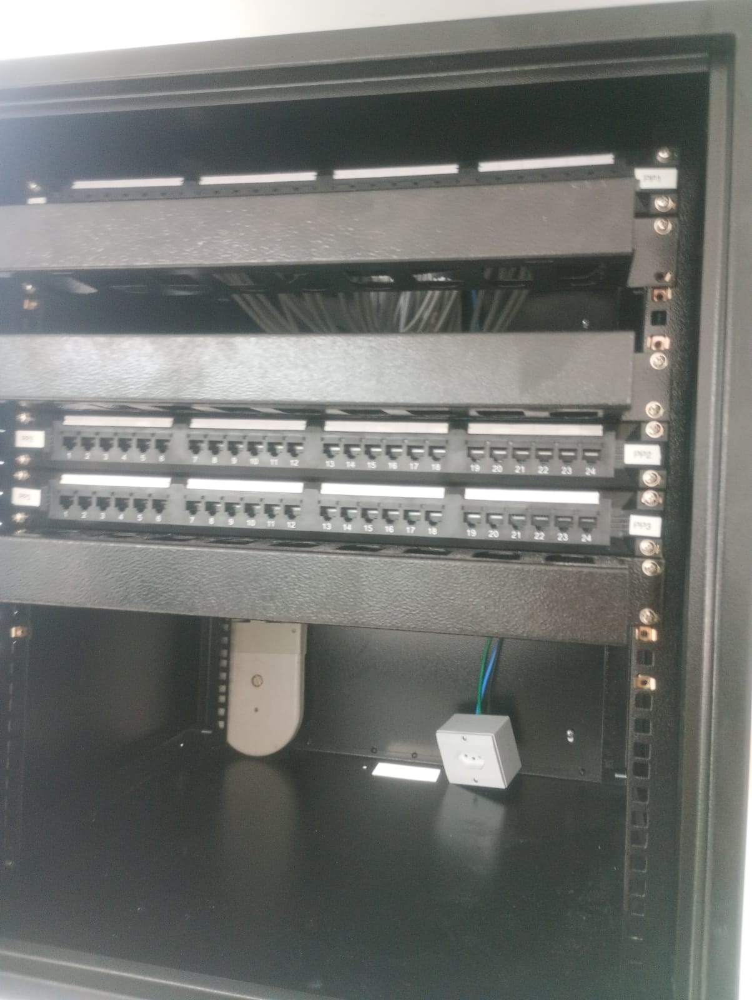
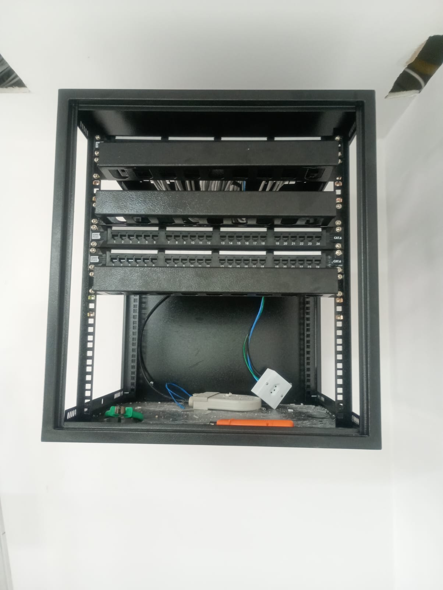
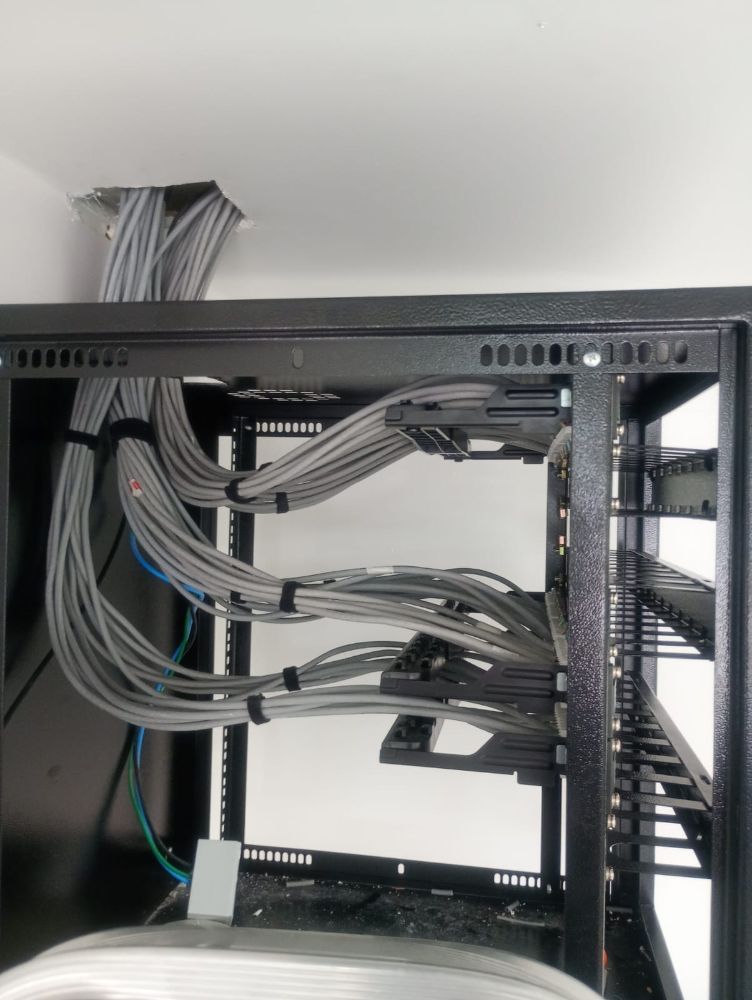
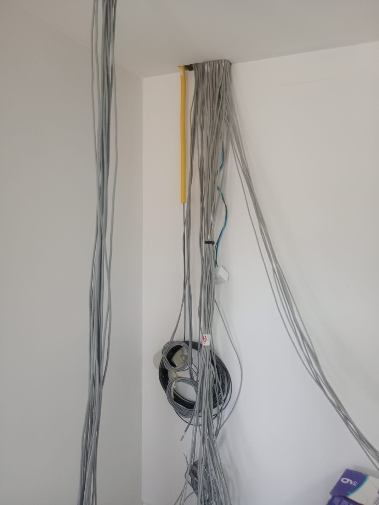
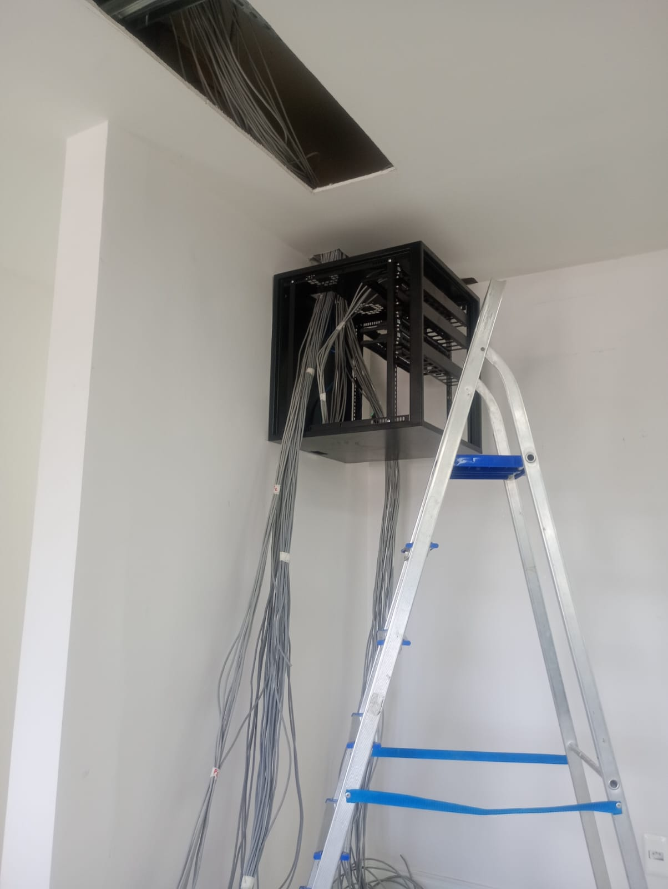
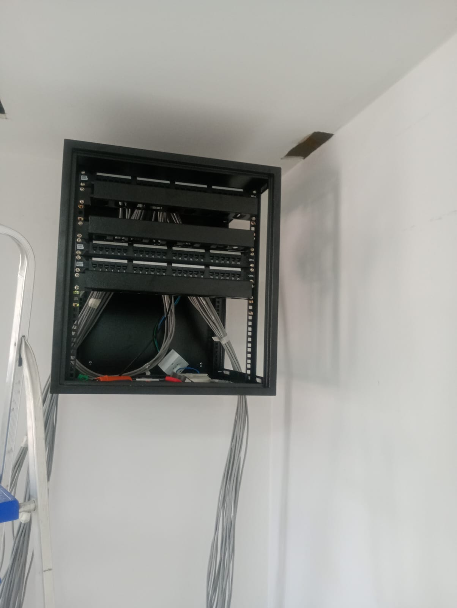
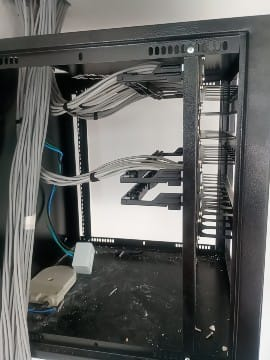
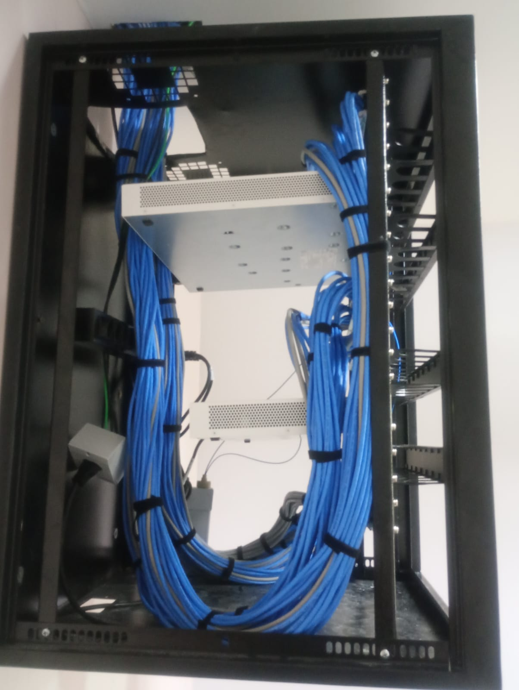
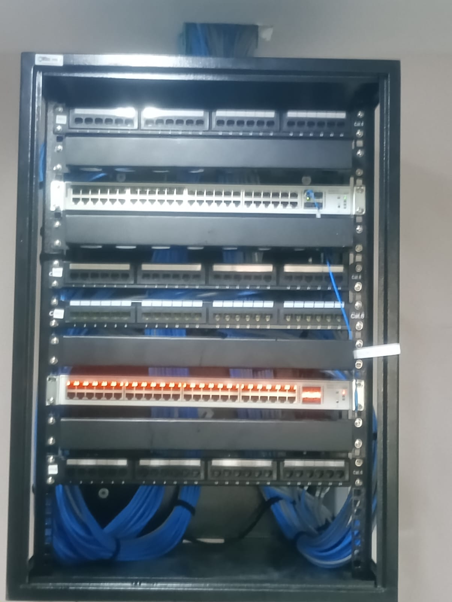
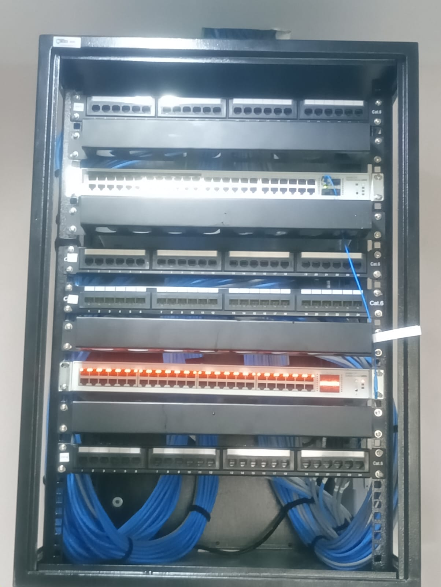
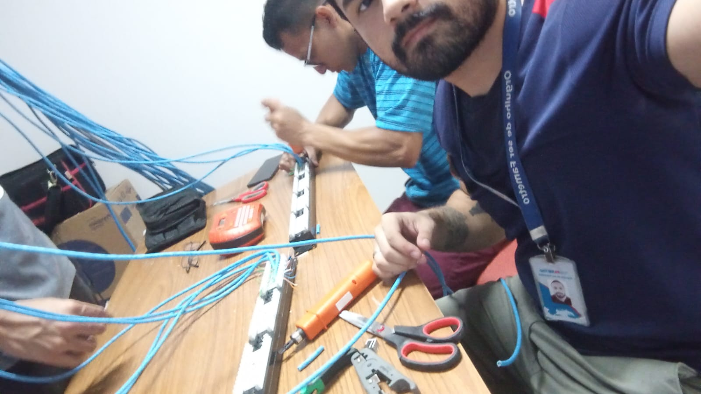
PRÁTICAS
Registro em vídeo de atividades práticas realizadas em campo, demonstrando procedimentos técnicos e execução dos serviços.
Vídeo demonstrando a montagem e instalação de um módulo Keystone com tampa 4x2, registrando uma atividade prática de infraestrutura e cabeamento.
Vídeo demonstrando a montagem e instalação de um módulo Keystone com tampa 4x2, registrando uma atividade prática de infraestrutura e cabeamento.
Vídeo demonstrando a configuração de um switch D-Link DGS-1210-28. O equipamento foi acessado inicialmente pelo IP de fábrica 10.90.90.90, utilizando uma máquina configurada com o IP 10.90.90.91. Após o acesso à interface web, foi configurado o IP fixo de gerenciamento 192.168.200.131 com máscara /22 e gateway 192.168.200.1. Também foram criadas e organizadas as VLANs 400 (Desktop LAN), 2000 (Gerência) e 2004 (Impressora). A porta 24 foi configurada como trunk, transportando as VLANs de gerência, impressora e Desktop LAN. A porta 1 foi definida como untagged para impressora, as portas 2 a 10 como untagged para a Desktop LAN e a porta 23 como untagged para a rede de gerência de segurança. Foram configurados os respectivos PVIDs e uma senha forte para proteção do equipamento.
Vídeo completo demonstrando a crimpagem de um cabo de rede RJ45 seguindo o padrão Tipo A (T568A), desde a organização dos condutores até a montagem e finalização do conector. A atividade registra uma prática de cabeamento estruturado e preparação de cabo de rede.
06 • ESTUDOS EM ANDAMENTO
LAN, Ethernet, endereçamento IPv4, MAC, ARP e conectividade.
Divisão de redes, CIDR, máscara, broadcast e faixa de hosts.
VLAN 10, 20 e 30, portas access, trunk e comunicação entre switches.
DORA, pools, excluded-address, gateway, DNS e verificação das concessões.
Gateway, subinterfaces, 802.1Q e Router-on-a-Stick.
Uso de testes de conectividade e comandos de verificação para localizar falhas.
Os laboratórios são realizados de forma prática no Cisco Packet Tracer, seguindo a sequência teoria → laboratório → desafio → validação.
07 • MATERIAIS DO PACKET TRACER
Arquivos .pkt utilizados nos estudos atuais ficam disponíveis como material de apoio e demonstração prática.
08 • FORMAÇÃO E QUALIFICAÇÕES
Unyleya — cursando
Formação técnica
Formação técnica
Completo
09 • OBJETIVO
Atuar em Suporte Técnico, Infraestrutura de TI, Redes de Computadores ou Suporte N2, contribuindo com experiência em atendimento a usuários, manutenção de computadores e hardware, cabeamento, racks, switches gerenciáveis, Wi-Fi e diagnóstico de conectividade.
10 • CONTATO
Disponível para oportunidades em Suporte Técnico, Infraestrutura e Redes.